Capitulo 4
-Radicais
28
Radiciação
Vamos iniciar a radiciação resolvendo algumas situações.
- Leia atentamente as duas situações que serão apresentadas e troque ideias com um colega para resolvê-las. No caderno, anotemas conclusões a que vocês chegarem.
Situação 1
Em uma fazenda, reservou-se uma região quadrada de 2 500 m² para pasto. Quanto mede cada lado dessa região?

Situação 2
Um bloco de concreto na forma de um cubo tem 8 m³ de volume. Quanto mede cada aresta desse bloco?
Lembre-se que o volume de um cubo é dado por , ou seja, para determinar o volume do cubo, eleva-se ao cubo a medida de sua aresta.

Para resolver as situações anteriores, utilizamos a radiciação.
A radiciação e a potenciação são operações inversas. Observe os seguintes exemplos e a definição de cada um dos elementos que constitui um radical:
= 5, pois 52 = 25
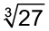 = 3, pois 33 = 27
29
Em = 5 (lê-se: a raiz quadrada de 25 é igual a 5), temos que:
- 2 → é o índice do radical;
- 25 → é o radicando do radical;
- 5 → é a raiz.
Quando o índice do radical for igual a 2, não é necessário indicá-lo, ou seja,
é o mesmo que
 .
.
Em = 3 (lê-se: a raiz cúbica de 27 é igual a 3), temos que:
- 3 → é o índice do radical;
- 27 → é o radicando do radical;
- 3 → é a raiz.
Exemplos de cálculo da raiz pela fatoração:

|
225 |
3 |
|
|
75 |
3 |
|
|
25 |
5 |
|
|
5 |
5 |
|
|
1 |
 3
3
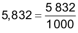

Logo:
 =
1,8, pois (1,8)3
=
5,832
=
1,8, pois (1,8)3
=
5,832

30
Vamos verificar o que ocorre quando o índice de um radical é par e quando ele é ímpar.
Quando o índice do radical é par
Observe:
 =
4, pois 42
=
16.
=
4, pois 42
=
16.
 =
3, pois 34
=
81.
=
3, pois 34
=
81.
- não é um número real, pois não existe um número real que elevado ao quadrado resulte -16.
-
 não é um número real, pois não existe um número real que elevado a quarta potência
resulte
-81.
não é um número real, pois não existe um número real que elevado a quarta potência
resulte
-81.

Lembre-se! A radiciação e a potenciação são operações inversas. Na potenciação, para qualquer valor elevado a um expoente par, a resposta sempre será positiva.
Quando o índice do radical é ímpar
Observe:
- = 3, pois 33 = 27.
- 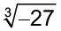= −3, pois (−3)3 = −27.
- = 2, pois 25 = 32.
 =
−2, pois (−2)5
=
−32.
=
−2, pois (−2)5
=
−32.

31
Encontre soluções
- Em seu caderno, calcule o valor dos seguintes radicais, quando possível.
- 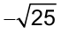
-

- 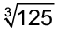
- 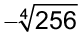
- 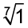
- 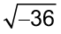
-

-

- 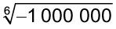
- A área de um terreno quadrado é 108,16 m². Qual é o perímetro desse terreno?
- O volume de um cubo é 1,331 cm³. Qual é a medida da aresta desse cubo?
Potências com expoente racional
Já sabemos realizar cálculos em que as potências apresentam expoente com números inteiros. Agora vamos estudar como calcular uma potência quando o expoente é um número racional.
Observe:
- 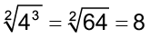
Como os resultados são iguais, temos que 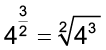 .
Vejamos outro exemplo:


Vamos usar uma calculadora científica para nos auxiliar a extrair a raiz cubica de 274 .
Vamos usar as teclas
 e
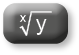
.
e
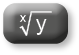
.
- Para calcular 274 :
digite 27, tecle
 , digite 4 e tecle
, digite 4 e tecle
 .
.
Aparecerá no visor: 531 441.
- Para calcular a raiz cúbica:
tecle
, digite 3 (índice) e tecle
.
Aparecerá no visor: 81.
32
Portanto:

Como os resultados são iguais, temos que
 .
.
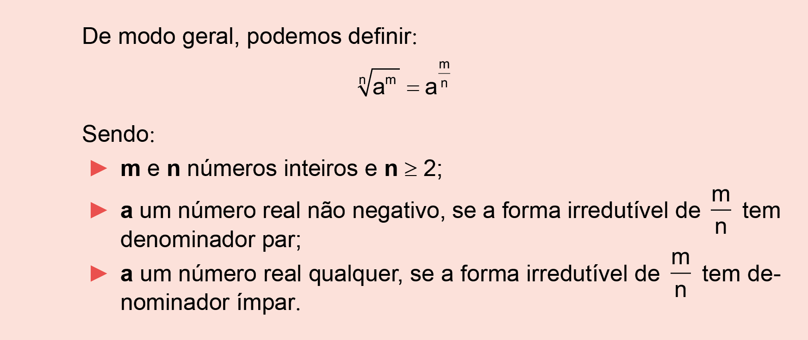
Veja outros exemplos:


- 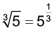
 não é um número real
não é um número real
Encontre soluções
- No caderno, escreva os seguintes radicais como potência:
- Agora, escreva, em seu caderno, as seguintes potências como
radicais:


33
- Em seu caderno, calcule, simplificando o resultado quando possível:

- 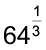
- 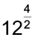

- 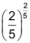
- 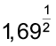
-

-

- 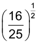
-

- As propriedades da potenciação são válidas também para potências com
expoentes racionais.
Usando as propriedades da potenciação, escreva as
operações na forma de uma única potência e na forma de radical:


- 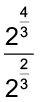
- Determine:
- 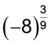
- 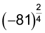
Propriedades dos radicais
Da mesma forma que a potenciação, a radiciação também apresenta algumas propriedades fundamentais que ajudam a simplificar os cálculos e aplicações matemáticas. Vamos estudar na sequência quais são essas propriedades.
1. a propriedade
Observe:
- = 6, pois 62 = 36
Logo:
- = 3, pois 33 = 27
Logo:


34
Veja outros exemplos:

Atenção!
,
ou seja,
 .
.
2. a propriedade

Observe:
- = 3
Como os resultados são iguais, temos:

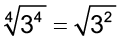
Vamos simplificar
 dividindo o índice e o expoente por um mesmo número.
dividindo o índice e o expoente por um mesmo número.
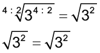
Veja outros exemplos:

3. a propriedade
Observe:
Então:

35
Note que a igualdade conserva-se verdadeira quando multiplicamos os índices dos radicais.

Veja outros exemplos:
4. a propriedade
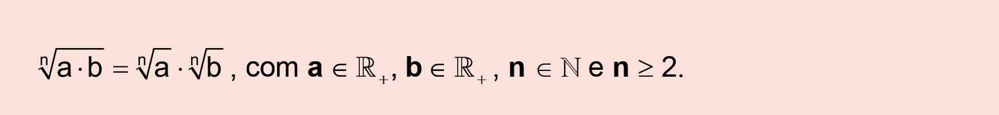
Observe:


Como os resultados são iguais, temos:
Também podemos mostrar essa igualdade utilizando a notação da potência de expoente racional para os radicais e utilizando as propriedades da potenciação:

Veja outros exemplos:
- 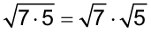
Atenção!
Utilizando a propriedade que acabamos de estudar, vamos mostrar uma igualdade importante.
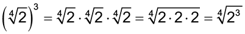
De modo geral, respeitando as condições de existência dos radicais, temos:
36

5. a propriedade

Observe:
- 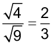
Como os resultados são iguais, temos:

Também podemos mostrar essa igualdade utilizando a notação da potência de expoente racional para os radicais e utilizando as propriedades da potenciação:
Veja outros exemplos:

Encontre soluções
- No caderno, calcule as expressões a seguir:


- 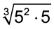
- Agora, determine o valor de
x
nas expressões a seguir:
-
- No caderno, simplifique cada expressão até obter um único radical:


37
- Transforme cada expressão em produto de radicais, sabendo que
x
e
y
representam números reais positivos.
- 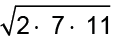
- Decomponha o radicando em fatores primos e transforme cada expressão
em
produto de radicais.


- 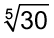
- Escreva, no caderno, cada expressão na forma de quociente de
radicais:
- Em seu caderno, simplifique as expressões, sabendo que
.
- 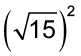

-


Simplificando fatores do radicando
Há diversas situações que envolvem cálculos com raízes não exatas. Nesses casos, para simplificá-los, podemos extrair fatores ou inserir um fator externo no radicando.
Acompanhe, a seguir, exemplos de como proceder em cada caso.
Extraindo fatores do radicando
Observe a seguinte expressão:
Podemos simplificá-la usando as propriedades de radiciação:

Logo,
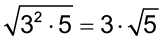, ou seja, 3 .
.
Veja outros exemplos:

- 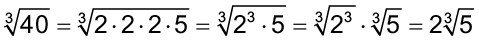
- 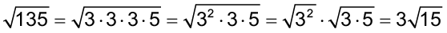

38
Inserindo um fator no radicando
Para inserir um fator externo à raiz no radicando, o processo é feito de modo inverso ao da extração dos fatores. Observe:
Então:
Veja outros exemplos:


Encontre soluções
- Simplifique cada radical, extraindo fatores do radicando, sabendo que
x
e
y
representam números reais positivos.
- 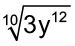

-


-


- 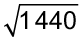
- Nas expressões a seguir, insira o fator externo no radicando,
sabendo
que
a,
b,
x,
y
e
z
representam números reais positivos.
- 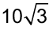


Operações com radicais
Há muitas expressões que envolvem operações básicas com radicais. Vamos conhecer, a seguir, como é o processo de cálculo para cada operação.
Adição e subtração de radicais
Observe a seguinte expressão:
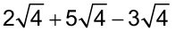
39
Podemos resolvê-la de duas maneiras:
1 . ª maneira
Calculando o valor dos radicais:
- = 2 · 2 + 5 · 2 - 3 · 2 = 4 + 10 - 6 = 8
2 . ª maneira
Fatorar, colocando o fator comum em evidência:
- = (2 + 5 - 3) = = 4 · 2 = 8

Veja outros exemplos:

Obtendo radicais com mesmo radicando, temos:

40
Expressões com multiplicação de radicais
Uma das aplicações das propriedades dos radicais é na resolução de expressões que envolvem a multiplicação de radicais de mesmo índice. Observe:
 ·
(5
+
)
·
(5
+
)
Aplicando a propriedade distributiva da multiplicação, temos:
=
 ·
(5
+
)
=
·
(5
+
)
=
=
·
5
+
·
=
Aplicando as propriedades da radiciação, temos:
=
5 +
+
 =
=
=
5 +
3
+
3
- (
 -
2) · (2
+
)
-
2) · (2
+
)
Aplicando a propriedade distributiva da multiplicação, temos:
=
( -
2) ·
(2
+
)
=
-
2) ·
(2
+
)
=
=
· 2
+
·
-
2
· 2
-
2
·
=
Aplicando as propriedades da radiciação, temos:

- ( +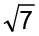)2
Observe que podemos reescrever da seguinte forma:
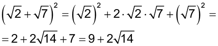

Observe que podemos reescrever da seguinte forma:
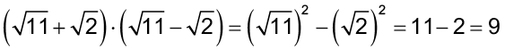
41
Encontre soluções
- Simplifique as seguintes expressões em seu caderno.
- 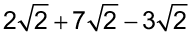


- No caderno, escreva, na forma mais simplificada possível, as
seguintes
expressões:
- Sabendo-se que
x
e
y
representam números reais positivos, calcule as seguintes adições no caderno:

- 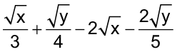
- No caderno, calcule as multiplicações:
-

-

-

-

- 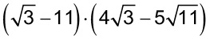
- Calcule, no caderno, os produtos a seguir.

- 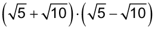
- Qual é a solução de ?


Multiplicação e divisão entre radicais com índices diferentes
Só é possível multiplicar e dividir radicais se eles tiverem o mesmo índice.
Assim, caso o produto seja entre radicais com índices diferentes, primeiramente devemos transformá-los em radicais com o mesmo índice. Acompanhe este exemplo:
No primeiro fator, temos o índice igual a 2; no segundo, o índice é igual a 3. Para transformar em radicais com o mesmo índice, inicialmente determinamos o mmc entre os índices 2 e 3.
mmc (2,3) = 6
42
Logo, 6 será o novo índice dos radicais.
Agora, observe como transformar cada radical com o novo índice:
1
.
o
fator
:

Lembre-se de que .
Para transformar o índice 2 em 6, temos de multiplicá-lo por 3. Para não alterar o valor do radical, o expoente do radicando também deverá ser multiplicado pelo mesmo fator. Assim, temos:

2 . o fator : 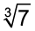
Para transformar o índice 3 em 6, devemos multiplicá-lo por 2. O mesmo deve ser feito com o expoente do radicando.
Agora, é possível resolver a multiplicação:
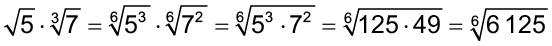
Veja outro exemplo:

Determinando o mmc entre os índices, temos:
mmc (3, 5) = 15
Assim:

Encontre soluções
- Em seu caderno, calcule as seguintes operações:


43
Racionalização de denominadores
Alguns cálculos podem apresentar frações cujo denominador é um radical. Nesse caso, eliminamos o radical do denominador, transformando essa fração em outra equivalente. Esse processo é denominado de racionalização de denominadores .
Vejamos como racionalizar a expressão .
Se multiplicarmos
 (denominador) por ele mesmo, o resultado será um número inteiro sem radical, ou seja:
(denominador) por ele mesmo, o resultado será um número inteiro sem radical, ou seja:
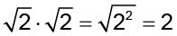
Para não alterar o valor que a fração representa, multiplicamos também o numerador por . Assim, o processo de racionalização será:

Logo:

Note que o fator
 é igual a 1, elemento neutro da multiplicação.
Por
isso, a racionalização não altera o valor da fração.
é igual a 1, elemento neutro da multiplicação.
Por
isso, a racionalização não altera o valor da fração.
Para exemplificar essa propriedade, vamos calcular a expressão 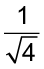 .
Calculando o radical, temos:
Fazendo a racionalização, temos:
Dessa forma, evidencia-se que a fração cujo denominador é um radical tem o valor equivalente ao resultado da sua racionalização.
Acompanhe outros exemplos de racionalização:
Logo,
 .
.
44


Portanto,
é equivalente a
 .
.
Quando o índice da raiz for diferente de 2, o fator racionalizante deverá ser obtido no início. Observe:
Já vimos que
e que
 .
Então, para racionalizar
, devemos multiplicá-lo por
:
.
Então, para racionalizar
, devemos multiplicá-lo por
:

Veja outro exemplo:

Racionalizando:
45

Vamos utilizar o exemplo da expressão .
 .
.
Logo, .
Veja outro exemplo:
Logo, .
46

Encontre soluções
- Racionalize as seguintes expressões:
- Racionalize a expressão .
- Por meio da racionalização, escreva no caderno, na forma mais
column-flexs
possível, as seguintes expressões:
- Racionalize o denominador das seguintes expressões:
- Racionalize as seguintes expressões, simplificando-as quando
possível:
- Com base em seus conhecimentos, calcule as seguintes expressões
numéricas:


47
Probabilidade e estatística
- Noções de probabilidade
Mariana colocou em uma caixa de acrílico 5 bolas azuis, 3 bolas vermelhas e 2 bolas verdes.
Se Mariana sacudir a caixa para misturar as bolas e, na sequência, sem olhar, retirar uma das bolas coloridas, qual a chance ou a probabilidade dessa bola ser:
- azul?
- vermelha?
- verde?
Como na caixa há um total de 10 bolas e há mais bolas azuis, a chance ou probabilidade de sair uma bola azul é maior.
Vejamos qual é a chance ou a probabilidade em cada um dos casos.
- a quantidade de bolas azuis é de 5 em 10, ou seja, representa a
razão
 .
Logo, temos que
.
Logo, temos que
 .
.
- a quantidade de bolas vermelhas é de 3 em 10, ou seja, representa
a
razão
 .
Logo, temos que
.
.
Logo, temos que
.
- a quantidade de bolas verdes é de 2 em 10, ou seja, representa a razão . Logo, temos que .
A chance de Mariana retirar uma bola azul é de 50%; uma bola vermelha, 30%; e uma bola verde, 20%.

- Ao lançarmos uma moeda que seja honesta, temos dois resultados possíveis: cara ou coroa. Qual é a probabilidade do resultado ser coroa?
- No lançamento de um dado, que não apresente defeitos e seja honesto, qual é a
probabilidade de ocorrer, na face voltada para cima:
- o número 5;
- um número par;
- um número múltiplo de 3.
- Em uma urna, há bolas numeradas de 1 a 20.
Qual é a
probabilidade de ser sorteada, ao acaso, uma bola cujo número seja:
- um múltiplo de 5;
- um divisor de 20;
- o múltiplo de 7;
- um divisor de 15.
- (ENEM) Em um blog de variedades, músicas, mantras e informações diversas, foram postadas “Contos de halloween”. Após a leitura, os visitantes poderiam opinar, assinalando suas reações em: “Divertido”, “Assustador” ou “Chato”. Ao final de uma semana, o blog registrou que 500 visitantes distintos acessaram esta postagem.
O gráfico a seguir apresenta o resultado da enquete.

O administrador do blog irá sortear um livro entre os visitantes que opinaram na postagem “Contos de halloween”. Sabendo que nenhum visitante votou mais de uma vez, a probabilidade de uma pessoa escolhida ao acaso entre as que opinaram ter assinalado que o conto “Contos de halloween” é “Chato” é mais aproximada por:
- 0,09.
- 0,12.
- 0,14.
- 0,15.
- 0,18.
- (ENEM) Todo o país passa pela primeira fase de campanha de vacinação contra a gripe suína (H1N1). Segundo um médico infectologista do Instituto Emílio Ribas, de São Paulo, a imunização “deve mudar”, no país, a história da epidemia. Com a vacina, de acordo com ele, o Brasil tem a chance de barrar uma tendência do crescimento da doença, que já matou 17 mil no mundo. A tabela apresenta dados específicos de um único posto de vacinação.
Campanha de vacinação contra a gripe suína
|
Datas de vacinação |
Público-alvo |
Quantidade de
|
|
8 a 9 de março |
Trabalhadores da saúde e indígenas |
42 |
|
22 de março a 2 de abril |
Portadores de doenças crônicas |
22 |
|
5 a 23 de abril |
Adultos saudáveis entre 20 e 29 anos |
56 |
|
24 de abril a 7 de maio |
População com mais de 60 anos |
30 |
|
10 a 21 de maio |
Adultos saudáveis entre 30 e 39 anos |
50 |
Disponível em: http : //img . terra . com . br . Acesso em 28 abr. 2010 (adaptado).
Escolhendo-se aleatoriamente uma pessoa atendida nesse posto de vacinação, a probabilidade de ela ser portadora de doença crônica é
- 8%.
- 9%.
- 11%.
- 12%.
- 22%.
- (OSEC-SP) Foram preparadas noventa empadinhas de camarão, sendo que, a pedido,
sessenta
delas deveriam ser bem mais apimentadas.
Por pressa e confusão de última
hora, foram todas colocadas ao acaso, numa mesma travessa para serem servidas.
A probabilidade de alguém retirar uma empadinha mais apimentada é:


S.I. / Casa da Moeda
50
r elembrE
- Qual das afirmações a seguir é falsa?
- Todo número natural é racional.
- Toda dízima periódica é racional.
- Todo número irracional é real.
- Existe número natural que não é racional.
- (PUC-Minas) Uma empresa deve instalar telefones de emergência a cada 42
quilômetros,
ao
longo da rodovia de 2 184 km, que liga Maceió ao Rio de Janeiro. Considere que o primeiro é instalado
no
quilômetro 42 e o último, no quilômetro 2 142. Assim a quantidade de telefones instalados é igual a:
- 50
- 51
- 52
- 53
- (Saresp) A letra L está assinalando, na reta numérica, o número 45,477.
Qual é o número que a letra J está assinalando?
- 45,456
- 45,454
- 45,435
- 45,404
- Se a
=
1,6; b
=
e c
=
 , podemos afirmar que:
, podemos afirmar que:
- a < b < c
- b < a < c
- c < b < a
- a < c < b
- Considerando
n
um número natural diferente de 0
(zero), a expressão 4n
-
1 pode representar a sequência:
- 6, 10, 14, 18, ...
- 8, 12, 16, 20, ...
- 3, 7, 11, 15, 19, ...
- 9, 13, 17, 21, ...
- A expressão
 é igual a:
é igual a: - (UFRJ) Uma roda de 10 cm de diâmetro gira em linha reta, sem escorregar, sobre uma superfície lisa e horizontal.


O menor número de voltas completas para a roda percorrer uma distância maior que 10 m é:
- 28
- 30
- 32
- 34
- (PUC-Minas) Um ciclista deve dar dez voltas completas em uma pista circular que
tem
100
m de raio. Após percorrer 3,2 km, esse ciclista estará na volta de número:
- 5
- 6
- 7
- 8
51
- (UFPR) Maria e seus colegas trabalham em uma empresa localizada em uma praça circular. Essa praça é circundada por uma calçada e dividida em partes iguais por 12 caminhos retos, que vão da borda ao centro da praça, conforme o esquema abaixo.

A empresa fica no ponto E, há um restaurante no ponto R, uma agência dos Correios no ponto C e uma lanchonete no ponto L. Quando saem para almoçar, as pessoas fazem caminhos diferentes: Maria sempre se desloca pela calçada que circunda a praça; Carmem sempre passa pelo centro da praça, vai olhar o cardápio do restaurante e, se este não estiver do seu agrado, vai almoçar na lanchonete, caminhando pela calçada; Sérgio sempre passa pelo centro da praça e pelos Correios, daí seguindo para a lanchonete ou para o restaurante. Sabendo que as pessoas sempre percorrem o menor arco possível quando caminham na calçada que circunda a praça, avalie as afirmativas a seguir:
I. Quando Carmem e Sérgio vão almoçar na lanchonete, ambos percorrem a mesma distância.
II. Quando Maria e Sérgio vão almoçar na lanchonete, quem percorre a menor distância é Maria.
III. Quando todos os três vão almoçar no restaurante, Carmem percorre a menor distância.
Assinale a alternativa correta.
- As afirmativas I, II e III são verdadeiras.
- Somente a afirmativa I é verdadeira.
- Somente as afirmativas II e III são verdadeiras.
- Somente as afirmativas I e III são verdadeiras.
- Somente as afirmativas I e II são verdadeiras.
- (EEP-SP) A expressão
 é
equivalente a:
é
equivalente a:
- 2
- -2
- 3
- -3
- (Saresp) Efetuando
 +
+
 ∙
,
obtemos
o
resultado:
∙
,
obtemos
o
resultado:
- 2
- 8
- 10
- 14
- (VUNESP) O valor da expressão
é:a)

b)

c)

d)
50
- (FUVEST-SP) Se a
=
e b
=
, então o valor de
ab
é:
a)

b)
c)
d)
- (UFSM-RS) O valor da expressão
 é igual a:
é igual a:
a) 2- 1
b) 20
c)

d) 24
- (UTFPR) A expressão
é igual a:
- O valor de
 é igual a:
é igual a:
- 2
- 4
- 8
- 16
- A expressão
 é equivalente a:
é equivalente a:
a)

b)
c)

d) 21
- (UFBA) A expressão
 é igual a:
é igual a:


- n.d.a
- (UFAL) A expressão
é igual a:
- 0
- 90
- n.d.a
- (UFC-CE) Simplificando a expressão
 , obteremos:
, obteremos:


51
- (CESGRANRIO-RJ) Racionalizando o denominador, veremos que a razão
 é igual a:
é igual a:
a)

b)
c)
d)
- (OSEC-SP) A probabilidade de uma bola branca aparecer ao se
retirar
uma
única bola de uma urna contendo 4 bolas brancas, 3 vermelhas e 5 azuis, é:
a)
b)

c)
d)

e) n.d.a.
- (CESGRANRIO-RJ) Os 240 cartões de um conjunto são numerados
consecutivamente de 1 a 240.
Retirando-se ao acaso um cartão desse
conjunto, a probabilidade de se obter um cartão numerado com um múltiplo de 13 é:
- (CMB) A forma mais column-flexs da expressão
 é:
é:
- (UFSM) O valor da expressão
é:
- 3 ∙ 103
- 3
- 3 ∙ 101
- 9 ∙ 103
- 27 ∙ 103
- Determine a área das figuras dadas a seguir:


- (Fuvest-SP) Escolhido ao acaso um elemento do conjunto de
divisores
positivos de 60, a probabilidade de que ele seja primo é: